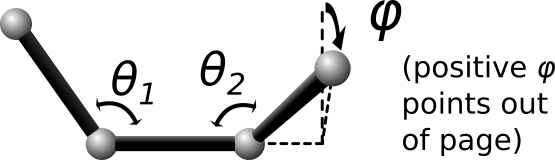

dihedral_style spherical command
Syntax
dihedral_style spherical
Examples
dihedral_coeff 1 1 286.1 1 124 1 1 90.0 0 1 90.0 0
dihedral_coeff 1 3 286.1 1 114 1 1 90 0 1 90.0 0 &
17.3 0 0.0 0 1 158 1 0 0.0 0 &
15.1 0 0.0 0 0 0.0 0 1 167.3 1
Description
The spherical dihedral style uses the potential:

For this dihedral style, the energy can be any function that combines the 4-body dihedral-angle (phi) and the two 3-body bond-angles (theta1, theta2). For this reason, there is usually no need to define 3-body “angle” forces separately for the atoms participating in these interactions. It is probably more efficient to incorporate 3-body angle forces into the dihedral interaction even if it requires adding additional terms to the expansion (as was done in the second example). A careful choice of parameters can prevent singularities that occur with traditional force-fields whenever theta1 or theta2 approach 0 or 180 degrees. The last example above corresponds to an interaction with a single energy minima located at phi=114, theta1=158, theta2=167.3 degrees, and it remains numerically stable at all angles (phi, theta1, theta2). In this example, the coefficients 17.3, and 15.1 can be physically interpreted as the harmonic spring constants for theta1 and theta2 around their minima. The coefficient 286.1 is the harmonic spring constant for phi after division by sin(158)*sin(167.3) (the minima positions for theta1 and theta2).
The following coefficients must be defined for each dihedral type via the dihedral_coeff command as in the example above, or in the Dihedral Coeffs section of a data file file read by the read_data command:
- n (integer >= 1)
- C1 (energy)
- K1 (typically an integer)
- a1 (degrees)
- u1 (typically 0.0 or 1.0)
- L1 (typically an integer)
- b1 (degrees, typically 0.0 or 90.0)
- v1 (typically 0.0 or 1.0)
- M1 (typically an integer)
- c1 (degrees, typically 0.0 or 90.0)
- w1 (typically 0.0 or 1.0)
- Cn (energy)
- Kn (typically an integer)
- an (degrees)
- un (typically 0.0 or 1.0)
- Ln (typically an integer)
- bn (degrees, typically 0.0 or 90.0)
- vn (typically 0.0 or 1.0)
- Mn (typically an integer)
- cn (degrees, typically 0.0 or 90.0)
- wn (typically 0.0 or 1.0)
Restrictions
This dihedral style can only be used if LAMMPS was built with the USER_MISC package. See the Making LAMMPS section for more info on packages.